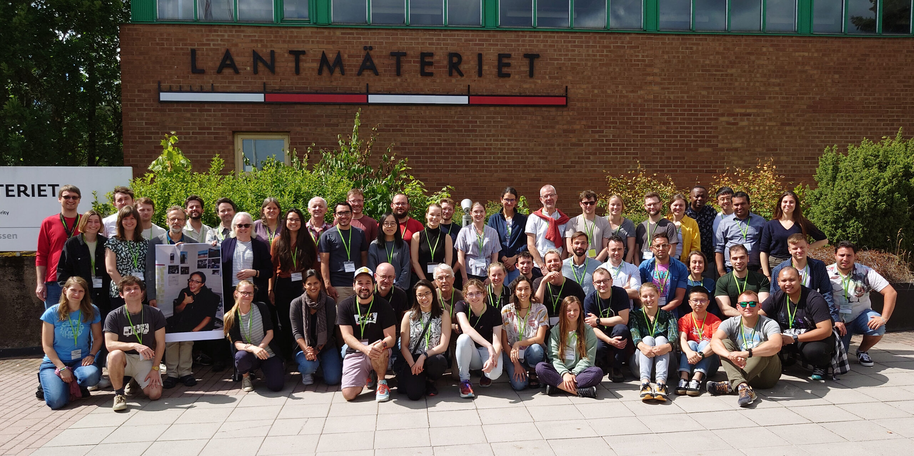
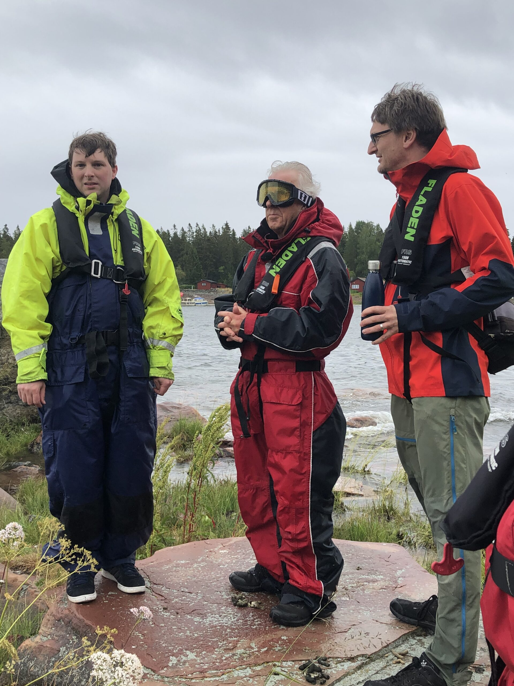
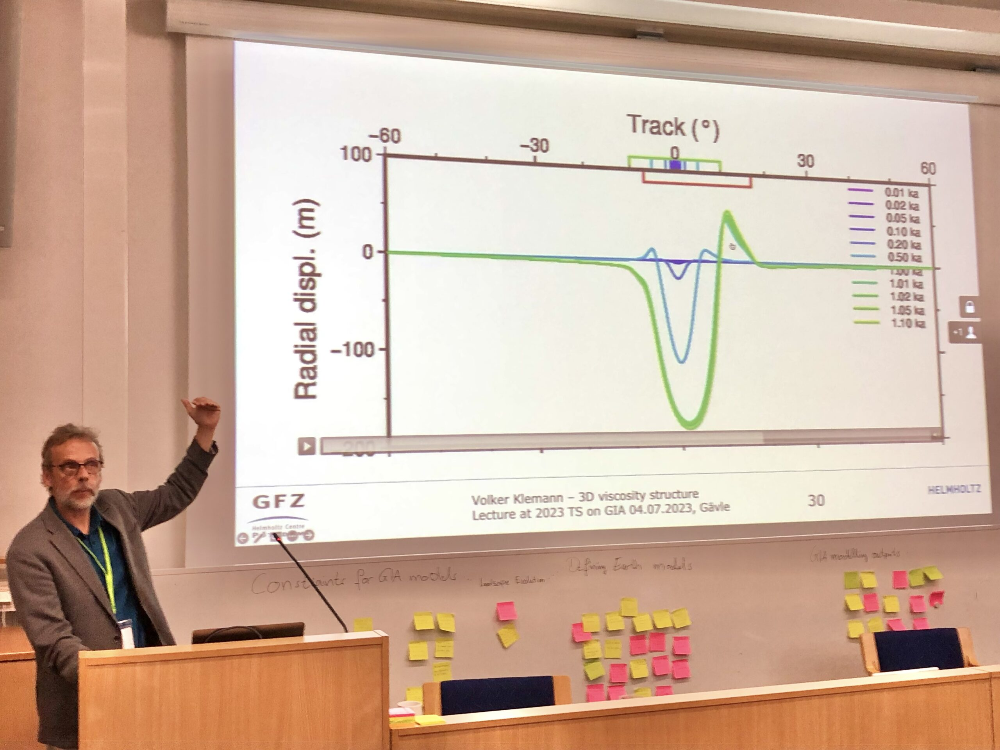
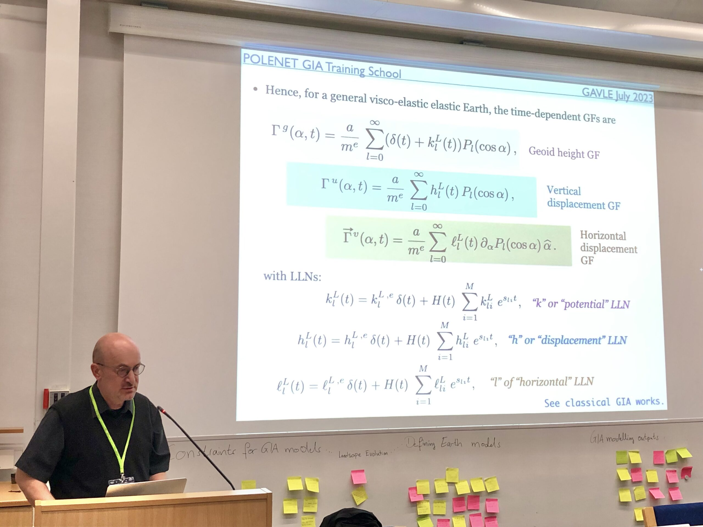
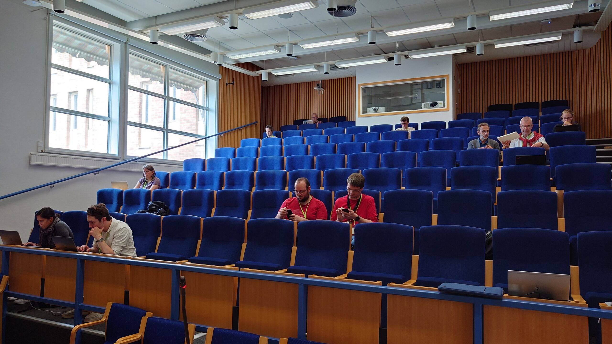
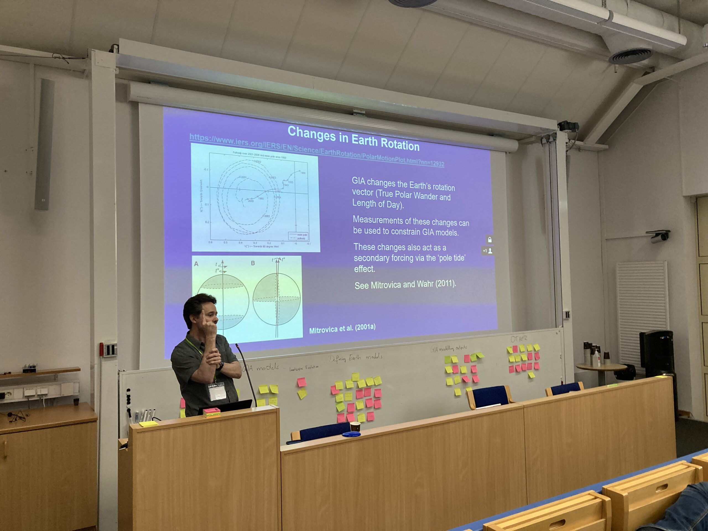
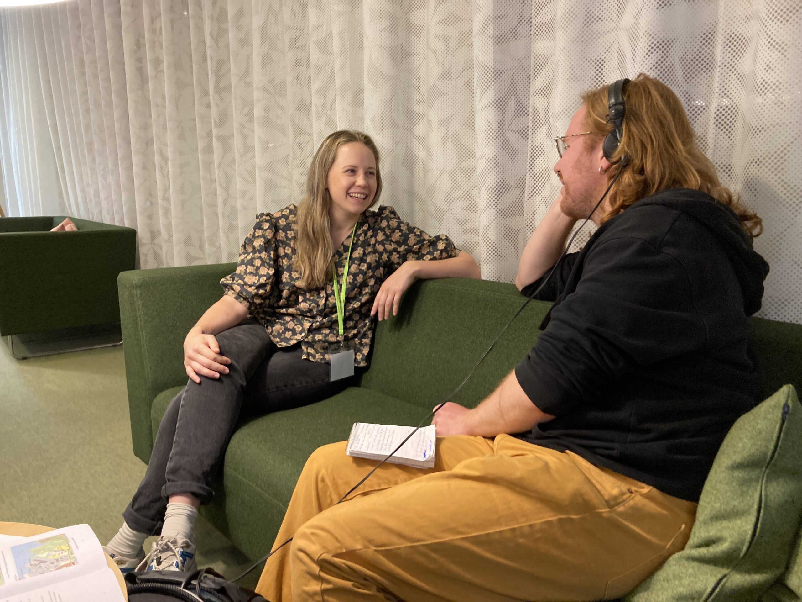
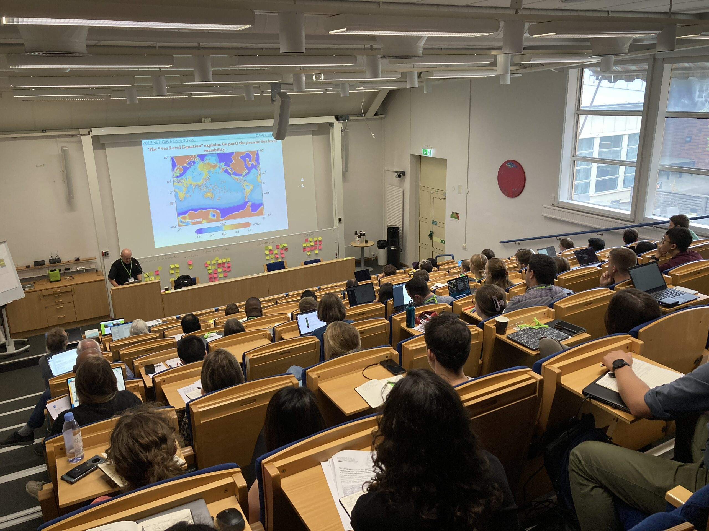
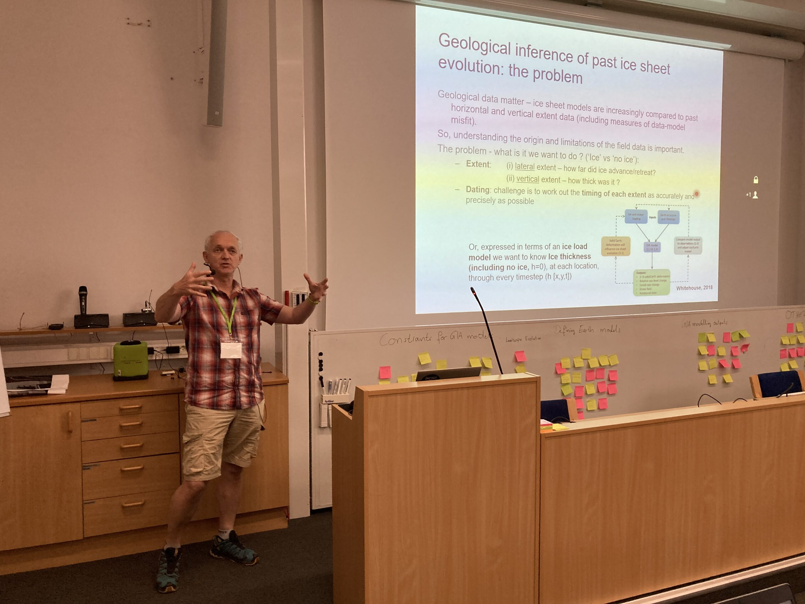

2023 GIA Training School Photos
The GIA Training School had begun! Take a peek below for some photos from instructors and participants.

Group photo! (photo credit: Rebekka Steffen)
From left to right, instructors Andrew Lloyd, Martin Ekman and Holger Steffen contemplating the seal level marks on Celsius Rock after a boat trip over rough seas from Gävle. (photo credit: Terry Wilson)
Instructor Volker Klemann lecturing (photo credit: Terry Wilson)
Instructor Giorgio Spada lecture (photo credit: Terry Wilson)
Instructors during the student exercise time (photo credit: Rebekka Steffen)
Instructor Glenn Milne explaining Earth rotation change due to GIA (photo credit: Holger Steffen)
Student Caroline van Calcar giving a live interview for local radio station "SR P4 Gävleborg" (photo credit: Holger Steffen)
Instructor Giorgio Spada answering questions (photo credit: Holger Steffen)
Instructor Mike Bentley lecturing (photo credit: Holger Steffen)